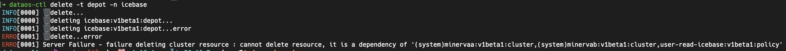
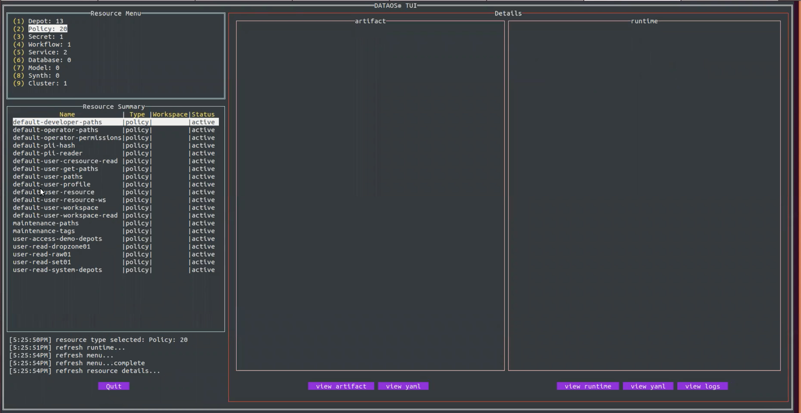

CLI Command Reference¶
You can get a complete list of all the commands, sub-commands, arguments and flags by using the help command within CLI itself.
apply¶
Create and update resources in a DataOS cluster through running apply command. A resource in DataOS can mean a policy or depot or workflow/service/etc. This command manages applications through .yaml files defining DataOS resources.
You can use apply to recursively create and update DataOS objects as needed.
Usage:
dataos-ctl apply [flags]
Flags:
-d, --de-ref De-reference the files, do not apply
--disable-interpolation Disable interpolation, do not interpolate $ENV|${ENV}
--disable-resolve-stack Disable resolve stack
-h, --help help for apply
-l, --lint Lint the files, do not apply
-f, --manifestFile string Manifest file location
-r, --re-run Re-run resource after apply
-R, --recursive Get manifest files recursively from the provided directory
--tls-allow-insecure Allow insecure TLS connections
-w, --workspace string Workspace to target resource (default "public")
collation¶
Interact with the Collation Service in the DataOS®
Usage:
dataos-ctl collation [command]
Available Commands:
content Interact with content items in the DataOS® Collation Service
metadata Interact with metadata in the DataOS® Collation Service
resource Interact with resources in the DataOS® Collation Service
Flags:
-h, --help help for collation
Global Flags:
--tls-allow-insecure Allow insecure TLS connections
Use "dataos-ctl collation [command] --help" for more information about a command.
completion¶
This mode places you in an interactive mode with auto-completion for the given shell (zsh or bash). To setup autocomplete in current bash shell, bash-completion package should be installed first.
zsh:
option 1 (speedy prompt startup time):
$ dataos-ctl completion zsh > ~/.dataos/.dataos-ctl-completion # for zsh users
$ source ~/.dataos/.dataos-ctl-completion
option 2 (always gets current commands):
$ source <(dataos-ctl completion zsh) # for zsh users
bash:
This depends on the bash-completion binary. Example installation instructions:
OS X:
$ brew install bash-completion
$ source $(brew --prefix)/etc/bash_completion
$ dataos-ctl completion bash > ~/.dataos/.dataos-ctl-completion # for bash users
$ source ~/.dataos/.dataos-ctl-completion
Ubuntu:
$ apt-get install bash-completion
$ source /etc/bash-completion
$ source <(dataos-ctl completion bash)
Additionally, you may want to output the completion to a file and source in your .bashrc
or .zshrc
Usage:
dataos-ctl completion SHELL [flags]
Flags:
-h, --help help for completion
context¶
Manage DataOS Contexts. A context represents the connection to a DataOS instance/environment and can be used to create depots, jobs, queries etc on that context.
Usage
dataos-ctl context [command]
Available Commands:
delete Delete DataOS® Context
list List DataOS® contexts
product Manage products and releases for the current DataOS® context
select Select DataOS® Context
Flags:
-h, --help help for context
Use "dataos-ctl context [command] --help" for more information about a command.
To learn more, refer to Context Command Group.
dataset¶
Apply toolkit commands in the DataOS®.
Usage:
dataos-ctl dataset [command]
Available Commands:
add-field Add Field
add-properties Add Properties
create Create
drop Drop
drop-field Drop Field
get Get
list List Datasets
metadata Get Metadata
properties Get Properties
remove-properties Remove Properties
rename-field Rename Field
rollback Rollback
set-metadata Set Metadata
set-nullable Set Nullable
set-snapshot Set Snapshot
snapshots List Snapshots
update-field Update Field
update-partition Update Partition
Flags:
-h, --help help for dataset
Use "dataos-ctl dataset [command] --help" for more information about a command.
delete¶
Delete resources in the DataOS.
Usage:
dataos-ctl delete [flags]
Flags:
--force Force delete even though dependencies are not allowing it
-h, --help help for delete
--id string Resource ID, like: TYPE:VERSION:NAME:WORKSPACE(optional), depot:v1:icebase or service:v1:ping:sandbox
-i, --identifier string Identifier of resource, like: NAME:VERSION:TYPE
-f, --manifestFile string Manifest file location
-n, --name string Name of resource
--tls-allow-insecure Allow Insecure TLS connections
-t, --type string The resource type to delete. Workspace resources: workflow,service,worker,secret,database,cluster,volume,resource,monitor,pager,lakehouse. Instance resources: policy,depot,compute,dataplane,stack,operator,bundle,instance-secret,grant.
-v, --version string Version of resource (default "v1")
-w, --workspace string Workspace to target resource (default "public")
DataOS checks resource dependability while deleting resources.

develop¶
With this command, manage DataOS Development. You can test the changes on the local machine before directly applying on the server.
Manage DataOS® Development
Usage:
dataos-ctl develop [command]
Available Commands:
generate Generate example manifests
get Get development containers
schema JSON Schema visibility for DataOS® resource types and apis
stack Stack specific commands
start Start development container
stop Stop development containers
types DataOS® resource types specific commands
Flags:
-h, --help help for develop
Use "dataos-ctl develop [command] --help" for more information about a command.
doc¶
Generate markdown documentation for every command
Usage:
dataos-ctl doc [flags]
Flags:
-h, --help help for doc
Global Flags:
--tls-allow-insecure Allow insecure TLS connections
domain¶
Manage domains in the DataOS®
Usage:
dataos-ctl domain [command]
Available Commands:
apply Apply DataOS® Domains
delete Delete DataOS® Domains
get Get DataOS® Domains
Flags:
-h, --help help for domain
Global Flags:
--tls-allow-insecure Allow insecure TLS connections
Use "dataos-ctl domain [command] --help" for more information about a command.
fastbase¶
Interact with the FastBase Depot in the DataOS®
Usage:
dataos-ctl fastbase [command]
Available Commands:
namespace Interact with namespaces in the DataOS® FastBase
tenant Interact with tenants in the DataOS® FastBase
topic Interact with topics in the DataOS® FastBase
Flags:
-h, --help help for fastbase
Global Flags:
--tls-allow-insecure Allow insecure TLS connections
Use "dataos-ctl fastbase [command] --help" for more information about a command.
get¶
Use get to pull a list of resources you have currently on your DataOS cluster. The types of resources you can get include-depot, function, job, policy, service, secret.
Usage:
dataos-ctl get [flags]
dataos-ctl get [command]
Available Commands:
runtime Get DataOS® Runtime Details
Flags:
-a, --all Get resources for all owners
-d, --details Set to true to include details in the result
-h, --help help for get
--id string Resource ID, like: TYPE:VERSION:NAME:WORKSPACE(optional), depot:v1:icebase or service:v1:ping:sandbox
-i, --identifier string Identifier of resource, like: NAME:VERSION:TYPE
-f, --manifestFile string Manifest File location
-n, --name string Name to query
-o, --owner string Get resources for a specific owner id, defaults to your id.
-r, --refresh Auto refresh the results
--refreshRate int Refresh rate in seconds (default 5)
--tags Set to true to include tags in the result
--tls-allow-insecure Allow insecure TLS connections
-t, --type string The resource type to get. Workspace resources: workflow,service,worker,secret,database,cluster,volume,resource,monitor,pager,lakehouse. Instance resources: policy,depot,compute,dataplane,stack,operator,bundle,instance-secret,grant.
--unSanitize Get the resources un-sanitized, this includes sensitive fields.
-v, --version string Version to query (default "v1")
-w, --workspace string Workspace to query
Use "dataos-ctl get [command] --help" for more information about a command.
dataos-ctl get -t workflow -w public -n quality-checks-test-cases
dataos-ctl -t workflow -w public -n quality-checks-test-cases get
dataos-ctl -i "quality-checks-test-cases | v1beta1 | workflow | public" get
dataos-ctl get -i "quality-checks-test-cases | v1beta1 | workflow | public"
Output:
INFO[0000] 🔍 workflow...
INFO[0002] 🔍 workflow...complete
NAME | VERSION | TYPE | WORKSPACE | STATUS | RUNTIME | OWNER
----------------------------|---------|----------|-----------|------------|-----------|----------------------
quality-checks-test-cases | v1beta1 | workflow | public | active | succeeded | rakeshvishvakarma21
To learn more, refer to Get Command Group.
health¶
Get health of DataOS CLI, DataOS resources and services. It checks if server is reachable and helps in troubleshooting.
Here is the expected output of this command:
% dataos-ctl health
INFO[0000] 🏥...
INFO[0000] DataOS® CLI...OK
INFO[0005] DataOS® CK...OK
INFO[0005] 🏥...complete
INFO[0005] 🔗...https://formerly-saving-lynx.dataos.io
INFO[0005] ⛅️...gcp
help¶
Get help for any command in the application.
init¶
Initialize the DataOS environment.
Usage:
dataos-ctl init [flags]
Flags:
-h, --help help for init
-n, --oldInitFlow Use the old initialization flow
jq¶
JSON filter a manifest using a jq filter
Usage:
dataos-ctl jq [flags]
Flags:
--filter string jq filter
-h, --help help for jq
-f, --manifestFile string Manifest file location
log¶
Get the logs for a resource in the DataOS®
Usage:
dataos-ctl log [flags]
Aliases:
log, logs
Flags:
-c, --container string Container name to filter logs
-f, --follow Follow the logs
-h, --help help for log
-i, --identifier string Identifier of resource, like: NAME:VERSION:TYPE
-r, --includeRunnable Include runnable system pods and logs
-n, --name string Name to query
--node string Node name to filter logs
-l, --tailLines int Number of tail lines to retrieve, use -1 to get all logs (default 300)
-t, --type string The resource type to get, possible values: service, workflow, cluster, depot
-v, --version string Version to query (default "v1")
-w, --workspace string Workspace to query (default "public")
Examples: The log command has been updated to pass a "node" as well as to support getting logs for "cluster" and "depot" types that have runtimes. If you don't pass a "node" to the logs command it will try to display all the "main" logs for all nodes.
dataos-ctl log -w public -t workflow -n cnt-city-demo-01 --node city-execute
dataos-ctl log -w system -t cluster -n minervab --node minervab-ss-0
You can also pass the "-i" command with the string to get the logs.
dataos-ctl -i "quality-checks-test-cases | v1beta1 | workflow | public" --node quality
-checks-summary-bviw-driver log
Output:
INFO[0000] 📃 log(public)...
INFO[0003] 📃 log(public)...complete
NODE NAME | CONTAINER NAME | ERROR
-------------------------------------|-------------------------|--------
quality-checks-summary-bviw-driver | spark-kubernetes-driver |
-------------------LOGS-------------------
2021-11-01 08:32:06,938 INFO [task-result-getter-1] o.a.s.s.TaskSetManager: Finished task 54.0 in stage 1.0 (TID 69) in 17 ms on 10.212.16.7 (executor 1) (67/200)
2021-11-01 08:32:06,954 INFO [dispatcher-CoarseGrainedScheduler] o.a.s.s.TaskSetManager: Starting task 57.0 in stage 1.0 (TID 71) (10.212.16.7, executor 1, partition 57, PROCESS_LOCAL, 4472 bytes) taskResourceAssignments Map()
2021-11-01 08:32:06,954 INFO [task-result-getter-2] o.a.s.s.TaskSetManager: Finished task 56.0 in stage 1.0 (TID 70) in 17 ms on 10.212.16.7 (executor 1) (68/200)
...
...
...
login¶
Log in to DataOS®
maintenance¶
Maintenance of the DataOS®
Usage:
dataos-ctl maintenance [command]
Available Commands:
collect-garbage Collect Garbage on the DataOS®
create-docker-secret Creates a Docker Secret for K8S
Flags:
-h, --help help for maintenance
operate¶
Operate the DataOS®
Usage:
dataos-ctl operate [command]
Available Commands:
chart-export Exports a Helm Chart from a Chart Registry
exec-stream Execute-stream a command on a specific target
get-dataplanes Get the dataplanes
get-secret Gets a secret from Heimdall
log-stream Stream the logs on a specific target
pulsar Pulsar management
tcp-stream Tcp-stream a specific address
Flags:
-h, --help help for operate
Global Flags:
--tls-allow-insecure Allow insecure TLS connections
Use "dataos-ctl operate [command] --help" for more information about a command.
product¶
Manage products in the DataOS®
Usage:
dataos-ctl product [command]
Available Commands:
apply Apply DataOS® Products
delete Delete DataOS® Products
get Get DataOS® Products
Flags:
-h, --help help for product
Global Flags:
--tls-allow-insecure Allow insecure TLS connections
Use "dataos-ctl product [command] --help" for more information about a command.
query-gateway¶
Interact with the Query Gateway in the DataOS®
Usage:
dataos-ctl query-gateway [command]
Available Commands:
connect Connect to the DataOS® Query Gateway
Flags:
-h, --help help for query-gateway
Global Flags:
--tls-allow-insecure Allow insecure TLS connections
Use "dataos-ctl query-gateway [command] --help" for more information about a command.
resource¶
Manage resources in the DataOS®
Usage:
dataos-ctl resource [command]
Available Commands:
apply Apply DataOS® Resources
create Create DataOS® Resources
delete Delete DataOS® Resources
get Get DataOS® Resources
log Get DataOS® Resource Logs
run Run DataOS® Resource
runtime DataOS® runtime management commands
tcp-stream Open a tcp stream for DataOS® Resources
update Update DataOS® Resources
Flags:
-h, --help help for resource
Global Flags:
--tls-allow-insecure Allow insecure TLS connections
Use "dataos-ctl resource [command] --help" for more information about a command.
role¶
Manage DataOS® Roles
Usage:
dataos-ctl role [command]
Aliases:
role, roles
Available Commands:
changes View a DataOS® Role changes
get Get DataOS® Roles
Flags:
-h, --help help for role
Global Flags:
--tls-allow-insecure Allow insecure TLS connections
Use "dataos-ctl role [command] --help" for more information about a command.
runtime¶
DataOS® runtime management commands
Usage:
dataos-ctl runtime [command]
Available Commands:
get Get DataOS® Runnable Resources
pause Pause DataOS® Runnable Resources
re-run Re-run DataOS® Runnable Resources
resume Resume DataOS® Runnable Resources
run Run DataOS® Runnable Resources
stop Stop DataOS® Runnable Resources
Flags:
-h, --help help for runtime
Global Flags:
--tls-allow-insecure Allow insecure TLS connections
Use "dataos-ctl runtime [command] --help" for more information about a command.
Examples: The "runtime run" sub-command initiates a directive to the Poros operator, instructing it to execute a workflow immediately. This functionality is applicable to both scheduled and one-time workflows. In the case of scheduled workflows, it triggers an immediate run, while for one-time workflows, it behaves same as 're-run' operation.
~ dataos-ctl get -w system -a
INFO[0000] 🔍 get...
INFO[0004] 🔍 get...complete
NAME | VERSION | TYPE | WORKSPACE | STATUS | RUNTIME | OWNER
---------------------------------|---------|----------|-----------|--------|--------------------------------|------------------------
miniature | v1 | cluster | system | active | running:1 | dataos-manager
system | v1 | cluster | system | active | running:1 | dataos-manager
prime-cloud-r-sa | v1 | secret | system | active | | dataos-manager
prime-cloud-rw-sa | v1 | secret | system | active | | dataos-manager
system-container-registry | v1 | secret | system | active | | dataos-manager
system-dataops-storage | v1 | secret | system | active | | dataos-manager
gateway-audit-receiver | v1 | service | system | active | running:1 | aashishverma
gateway-audit-receiver-01 | v1 | service | system | active | running:1 | metis
minerva-audit-receiver-01 | v1 | service | system | active | running:1 | metis
query-audit-service | v1 | service | system | active | running:1 | mohammadnabeelqureshi
stores-api | v1 | service | system | active | running:1 | metis
dataset-profiling-indexer | v1beta | worker | system | active | running:1 | metis
dataset-quality-checks-indexer | v1beta | worker | system | active | running:1 | metis
poros-indexer | v1beta | worker | system | active | running:2 | metis
query-usage-indexer | v1beta | worker | system | active | running:1 | metis
soda-quality-checks-indexer | v1beta | worker | system | active | running:1 | metis
data-insights-sync | v1 | workflow | system | active | next:2024-01-23T15:30:00+05:30 | metis
data-product-sync | v1 | workflow | system | active | next:2024-01-23T14:30:00+05:30 | metis
heimdall-users-sync | v1 | workflow | system | active | running | metis
system-metadata-sync | v1 | workflow | system | active | next:2024-01-23T14:00:00+05:30 | metis
➜ ~ dataos-ctl -i 'data-product-sync | v1 | workflow | system' runtime run
INFO[0000] 💨 runtime run...
INFO[0002] 💨 runtime run...complete
➜ ~ dataos-ctl get -w system -a
INFO[0000] 🔍 get...
INFO[0000] 🔍 get...complete
NAME | VERSION | TYPE | WORKSPACE | STATUS | RUNTIME | OWNER
---------------------------------|---------|----------|-----------|--------|--------------------------------|------------------------
miniature | v1 | cluster | system | active | running:1 | dataos-manager
system | v1 | cluster | system | active | running:1 | dataos-manager
prime-cloud-r-sa | v1 | secret | system | active | | dataos-manager
prime-cloud-rw-sa | v1 | secret | system | active | | dataos-manager
system-container-registry | v1 | secret | system | active | | dataos-manager
system-dataops-storage | v1 | secret | system | active | | dataos-manager
gateway-audit-receiver | v1 | service | system | active | running:1 | aashishverma
gateway-audit-receiver-01 | v1 | service | system | active | running:1 | metis
minerva-audit-receiver-01 | v1 | service | system | active | running:1 | metis
query-audit-service | v1 | service | system | active | running:1 | mohammadnabeelqureshi
stores-api | v1 | service | system | active | running:1 | metis
dataset-profiling-indexer | v1beta | worker | system | active | running:1 | metis
dataset-quality-checks-indexer | v1beta | worker | system | active | running:1 | metis
poros-indexer | v1beta | worker | system | active | running:2 | metis
query-usage-indexer | v1beta | worker | system | active | running:1 | metis
soda-quality-checks-indexer | v1beta | worker | system | active | running:1 | metis
data-insights-sync | v1 | workflow | system | active | next:2024-01-23T15:30:00+05:30 | metis
data-product-sync | v1 | workflow | system | active | running | metis
heimdall-users-sync | v1 | workflow | system | active | next:2024-01-23T13:50:00+05:30 | metis
system-metadata-sync | v1 | workflow | system | active | next:2024-01-23T14:00:00+05:30 | metis
tcp-stream¶
Open a tcp stream for resources in the DataOS®
Open a tcp stream for resources in the DataOS®
Usage:
dataos-ctl tcp-stream [flags]
Flags:
--dataplane string Dataplane name; default=hub (default "hub")
-h, --help help for tcp-stream
-i, --identifier string Identifier of resource, like: NAME:VERSION:TYPE
--listenPort int Port the local client will listen on to tcp stream (default 14040)
-n, --name string Name of resource
--node string Node name to open tcp stream in resource runtime
--servicePort int Service port to be forwarded (default 4040)
--serviceSuffix string Suffix to override default service suffix: ui-svc (default "ui-svc")
--tls-allow-insecure Allow Insecure TLS connections
-t, --type string The resource type to tcp-stream. Workspace resources: workflow,service,worker,secret,database,cluster,volume,resource,monitor,pager,lakehouse. Instance resources: policy,depot,compute,dataplane,stack,operator,bundle,instance-secret,grant.
-w, --workspace string Workspace to target resource (default "public")
tui¶
Terminal UI of the DataOS® Dataos-ctl TUI is a Terminal User Interface for DataOS®. It shows all the key resources deployed on the server. You can click on the resource menu to see the corresponding details in the Resource Summary section. You can view artefacts and Run time services/resources and their YAML. You can also view logs for runtime.

Usage:
dataos-ctl tui [flags]
Flags:
-h, --help help for tui
-w, --workspaces string list of workspaces to include, comma separated
update¶
Update resources in the DataOS®
Usage:
dataos-ctl update [flags]
Flags:
--disable-interpolation Disable interpolation, do not interpolate $ENV|${ENV}
--disable-resolve-stack Disable resolve stack
-h, --help help for update
-f, --manifestFile string Manifest file location
-R, --recursive Get manifest files recursively from the provided directory
--tls-allow-insecure Allow insecure TLS connections
-w, --workspace string Workspace to target resource (default "public")
user¶
Manage DataOS® Users
Usage:
dataos-ctl user [command]
Aliases:
user, users
Available Commands:
apikey Manage a DataOS® User apikey
changes View a DataOS® User changes
create Create a DataOS® User
delete Delete a DataOS® User
get Get DataOS® Users
tag Manage DataOS® User's tags
Flags:
-h, --help help for user
Global Flags:
--tls-allow-insecure Allow insecure TLS connections
Use "dataos-ctl user [command] --help" for more information about a command.
usql¶
usql, the universal command-line interface for SQL databases
Usage:
usql [OPTIONS]... [DSN]
Arguments:
DSN database url
Flags:
-c, --command=COMMAND ... run only single command (SQL or internal) and exit
-f, --file=FILE ... execute commands from file and exit
-w, --no-password never prompt for password
-X, --no-rc do not read start up file
-o, --out=OUT output file
-W, --password force password prompt (should happen automatically)
-1, --single-transaction execute as a single transaction (if non-interactive)
-v, --set=, --variable=NAME=VALUE ...
set variable NAME to VALUE
-P, --pset=VAR[=ARG] ... set printing option VAR to ARG (see \pset command)
-F, --field-separator=FIELD-SEPARATOR ...
field separator for unaligned and CSV output (default "|" and ",")
-R, --record-separator=RECORD-SEPARATOR ...
record separator for unaligned and CSV output (default \n)
-T, --table-attr=TABLE-ATTR ...
set HTML table tag attributes (e.g., width, border)
-A, --no-align unaligned table output mode
-H, --html HTML table output mode
-t, --tuples-only print rows only
-x, --expanded turn on expanded table output
-z, --field-separator-zero set field separator for unaligned and CSV output to zero byte
-0, --record-separator-zero set record separator for unaligned and CSV output to zero byte
-J, --json JSON output mode
-C, --csv CSV output mode
-G, --vertical vertical output mode
-q, --quiet run quietly (no messages, only query output)
--version display version and exit
version¶
Print the version number of DataOS.
view¶
Use this command to open GUI applications from the terminal.
Usage:
dataos-ctl view [flags]
Flags:
-a, --application string The application to view in your default browser: apps, datanet, workbench, atlas
-h, --help help for view
Example:
dataos-ctl view -a workbench
#this command will directly take you to the Workbench app in a new tab of the web browser
workspace¶
Manage DataOS workspaces.
Usage:
dataos-ctl workspace [command]
Available Commands:
create Create workspace
delete Delete workspaces
get Get workspaces
Flags:
-h, --help help for workspace
Use "dataos-ctl workspace [command] --help" for more information about a command.